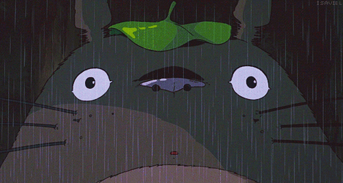

Studio Takalé est un studio d'enregistrement situé à Dakar, spécialisé dans la production musicale et le soutien aux artistes locaux.
Notre mission est de fournir un environnement professionnel et créatif pour que les musiciens puissent réaliser leur plein potentiel.
Nous offrons une gamme complète de services, y compris l'enregistrement, le mixage, le mastering, et la production musicale.
Notre équipe de professionnels expérimentés est dédiée à aider chaque artiste à atteindre ses objectifs musicaux.
Chez Studio Takalé, nous croyons en l'importance de la collaboration et de l'innovation.
Nous travaillons en étroite collaboration avec nos clients pour comprendre leurs besoins uniques et créer des solutions sur mesure qui répondent à leurs attentes.
Nous sommes fiers de notre engagement envers la qualité et l'excellence, et nous nous efforçons constamment d'améliorer nos services pour offrir la meilleure expérience possible à nos clients.
Que vous soyez un artiste émergent ou un musicien établi, Studio Takalé est là pour vous accompagner dans votre parcours musical.
Rejoignez-nous et découvrez comment nous pouvons vous aider à donner vie à votre musique.

Adresse e-mail : studiotakalé@proton.me